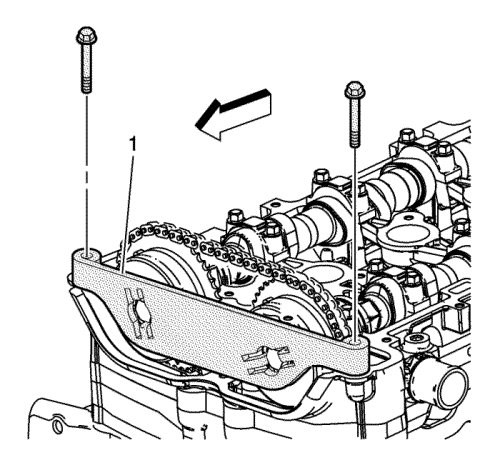

Montaje del balancín del cigüeñal
Herramientas especiales
| • | EN-48585 Guía de equilibrador del cigüeñal |
| • | EN-48953 Herramienta de bloqueo de actuadores de árbol de levas |
| • | EN 38122-A Herramienta de retención del dámper del cigüeñal |
| • | EN 43653 Herramienta de sujeción del volante motor |
| • | EN 45059 Medidor de ángulos |
Si desea informarse sobre herramientas regionales equivalentes, consultar Herramientas especiales .
Atención: Asegúrese de que los dos componentes están correctamente alineados; de lo contrario, pueden producirse graves daños en el motor.
- Monte la herramienta de retención EN 38122-A en el extremo del cigüeñal.
- Monte el dispositivo equilibrador (1) en la guía EN-48585. Tenga cuidado para alinear correctamente el chavetero y las superficies planas del dispositivo equilibrador con el accionamiento de la bomba de aceite.
Nota: la herramienta de bloqueo EN 43653 se puede utilizar en vez de la herramienta de retención EN 38122-A para impedir que gire el cigüeñal.
- Monte la herramienta de retención EN 38122-A (1).
Precaución: Consulte Precaución con las fijaciones en la sección Prólogo
Nota: Monte siempre un tornillo de retención nuevo del dispositivo equilibrador del cigüeñal y una arandela.
- Monte un tornillo de retención nuevo y una arandela. Utilice la herramienta de retención EN 38122-A y un mango articulado para evitar que el cigüeñal gire al apretar el tornillo. Apriete el tornillo hasta 100 N·m (74 lib. pie) más 125 grados utilizando el medidor EN 45059.

- Monte la herramienta de bloqueo EN-48953 (1) y apriete los tornillos en la culata. Apriete los tornillos de retención mediante la herramienta de bloqueo EN-48953 a 10 N·m (89 lib. pulg.).
- Libere el dispositivo tensor de la cadena de distribución aplicando un par de 45 N·m (33 lib. pie) en sentido antihorario en el tornillo del compensador del cigüeñal.
- Desmonte la herramienta de bloqueo EN-48953.
| © Copyright Chevrolet Europe. All rights reserved |